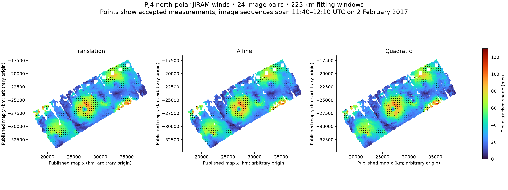

Polar winds from image motion
Comparing translation, affine and quadratic optical flow, with explicit tests of camera geometry, repeatability and spatial resolution.
Observations: February 2017 · Analysis on Unity · Updated 11 November 2026 UTCCurrent evidence
Native camera-corrected reanalysis is in progress. Original detector images and labels have been retrieved directly to Unity. Native checksums, camera geometry, independent distortion inversion, and controlled translation/affine/quadratic recovery checks have passed. A 128-worker Unity run is processing 10,441 image pairs. Per-image adjustment and independent-image validation remain in progress. The completed historical benchmark uses published mapped northern images; it is not the new detector-corrected result. SQG has not been validated.
What is actually in the JOVE archive?
The archive was inspected directly: its file inventory, numerical-array headers, PJ4 source-image headers, provenance records and the code that produced the assets. Its expanded size is 51.39 GB. Large size alone does not identify the processing level.
| Stored content | Expanded size | Meaning |
|---|---|---|
| Numerical globe arrays | 42.48 GB | Includes 17.72 GB of blending weights and 8.25 GB of mapped radiance |
| PNG images | 8.59 GB | Rendered map and thumbnail products |
| Metadata, code and other files | 0.32 GB | Includes source identifiers and acquisition instructions |
The 82 PJ4 M-band source PNGs are 4096 × 2048, 8-bit RGBA maps. Their provenance identifies 535 native observations. The numerical arrays are globe-grid arrays, not separate detector exposures; no native .IMG files are embedded in this ZIP. This distinction does not make the archive merely a picture collection: it includes mapped scalar radiance.
The source references are usable. All 535 identifiers were found in the public PDS orbit04 listing. The full image collection has now been downloaded directly to Unity: 3,333 files, comprising 1,111 detector images and their labels, totaling 277.19 MB. Geometry kernels were retrieved separately. Native images remain on Unity.
Correction to the initial workflow: the first benchmark proceeded with published maps before following the archive’s native-data references. That was an unnecessary limitation. The new analysis starts from detector images.
Native analysis: checks and open problems
All 1,111 native images match their archive-label sizes and MD5 checksums. The 553 M-band camera models pass the independent nominal-projection check. With stellar aberration separated, the maximum corrected detector round-trip error is 9.44 × 10⁻¹² pixels; the polynomial inverse independently agrees with Newton iteration to 7.86 × 10⁻¹² pixels.
A failed test was corrected openly. The initial round-trip check incorrectly required the NAIF reception and transmission aberration routines to be exact inverses. Their composition leaves up to 5.38 × 10⁻⁵ detector pixels. Direct comparison to NAIF reproduces the aberration calculation to 8.67 × 10⁻¹⁹ in direction components; subtracting its predicted nonclosure leaves 1.88 × 10⁻¹² pixels. Camera calculations and image-quality thresholds were unchanged.
The northern pilot exposed speed censoring. One geometry-selected pair has a coherent apparent displacement with a median speed of about 346 m/s among image-quality-passing matches. Applying the original 300 m/s cutoff retains only 366 of 3,773 affine matches. These apparent velocities are not interpreted as winds. The pointing network will retain all finite matches passing image-based checks, and keep the original speed flag. A final speed screen follows only a validated adjustment. This revision was specified after the pilot and before full-data analysis.
Known affine and quadratic deformations are recovered with 90th-percentile displacement errors below 0.024 chart pixels for the matching models. Exact rotation, expansion and strain fields verify polar metric factors and north/south signs at 150–1,200 km grid spacing. These numerical checks do not establish that observed divergence is reliable.
Joint vorticity–strain PDFs
The requested figures will follow GoFlow Figure 4 (Lenain et al., 2026): area-weighted joint density of ζ/f and α/|f|, with contours of conditional mean divergence δ/|f| and a companion divergence panel. North and south are separate; cyclonic ζ/f is positive in both, while negative δ/|f| means convergence. Image-disjoint checks and resolution tests accompany every interpretation.
Completed historical benchmark
The affine and quadratic estimates differ from the published TRACKER4 vectors by median vector magnitudes of 1.57 and 1.95 m/s. These fits use the same underlying mapped images, so this is a reproducibility check. Image-disjoint groups differ by about 15 m/s, with observation midpoints roughly eight minutes apart; that difference includes evolution and geometry effects.

Read the methods, checks, failed SQG designs and downloadable benchmark results →
Tests that can falsify the interpretation
- Verify native-file sizes and checksums against their archive labels.
- Require zero detector correction to reproduce the nominal camera engine; independently check the polynomial inverse and detector-to-surface round trip.
- Compare corrected and nominal camera runs on identical image pairs.
- Distinguish fixed detector distortion from per-image pointing error; test the latter separately.
- Measure known-motion recovery, forward/reverse consistency and agreement between groups with no shared images.
- Establish resolved wavelengths and common spatial support before comparing tracked vorticity with radiance-derived SQG vorticity. Do not tune velocities to the published winds or SQG prediction.
No energy-cascade or approximately 100 km energy-injection claim follows from the current benchmark. Failure of its selected SQG comparison domains is a limitation of that test design, not evidence against SQG.